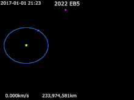

Asteroid 2022 EB5 made headlines in March 2022 when it became the first asteroid to be detected and tracked before it entered Earth’s atmosphere. It was a small asteroid, only about 2 meters (6.5 feet) in diameter, which means it posed no significant threat, as objects of this size generally disintegrate upon atmospheric entry. 2022 EB5 entered Earth's atmosphere near Norway, where it burned up and likely scattered small fragments across the North Atlantic Ocean. Its detection marked a milestone in asteroid monitoring technology, as the discovery and tracking occurred just hours before impact. Though small, 2022 EB5’s detection highlighted the increasing accuracy of asteroid monitoring systems and the importance of quick detection for planetary defense.